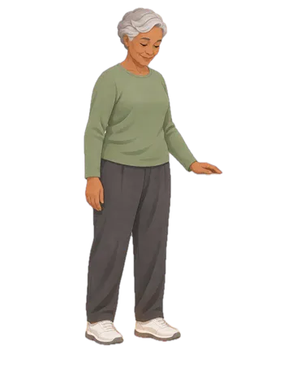
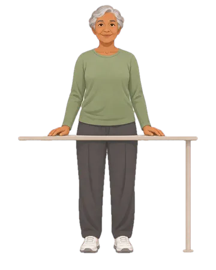
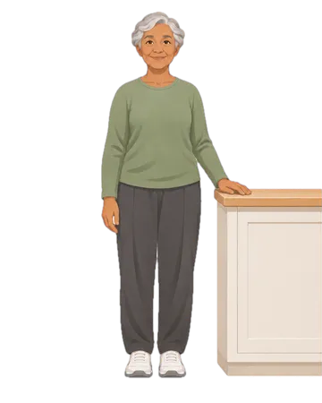
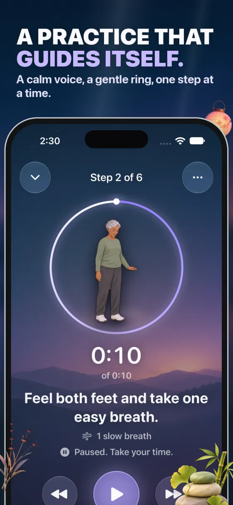
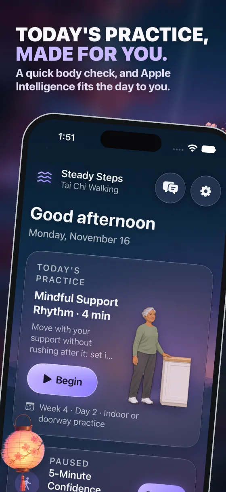
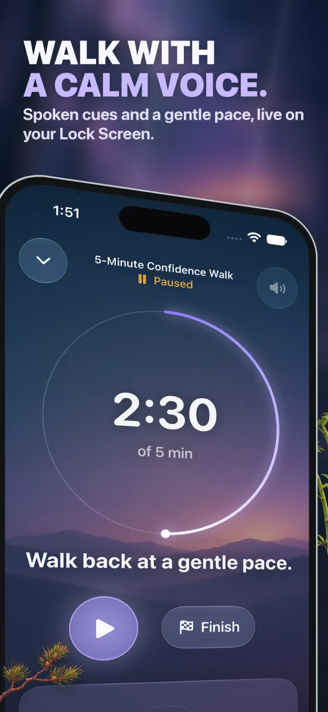
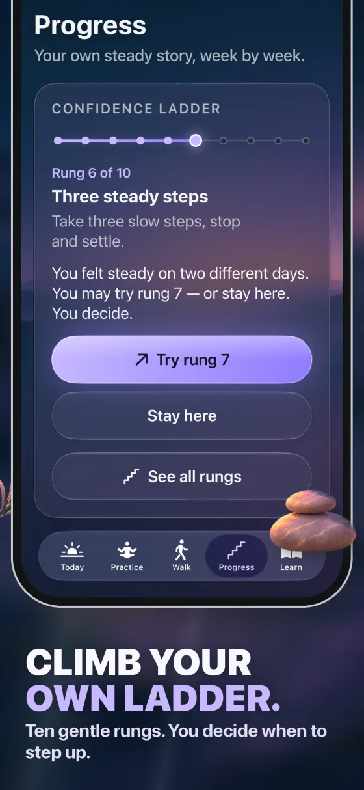
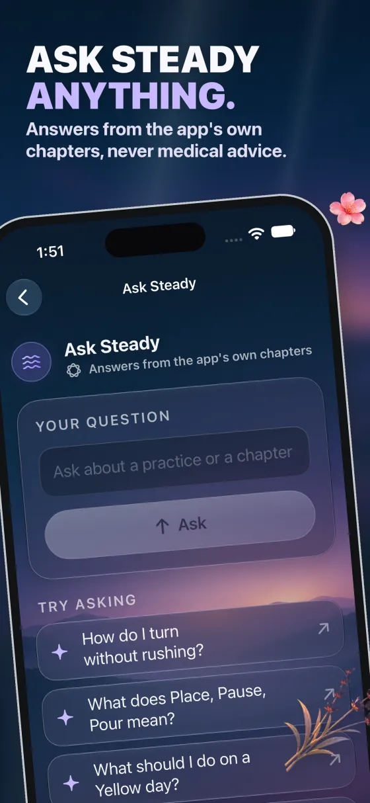
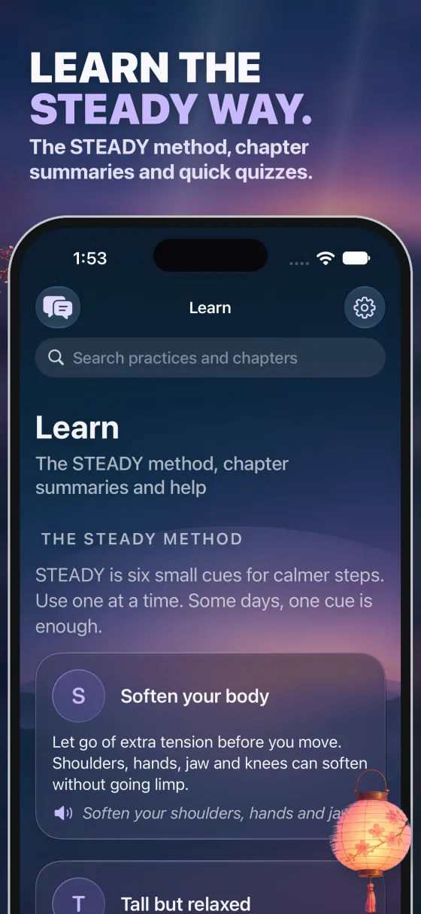

Gentle, tai chi-inspired walking practice for adults 60+ and careful beginners. Ask Siri to start a steady walk, follow calm spoken cues live on your Lock Screen, and let Apple Intelligence fit today's practice to how you feel.
$4.99 once. No subscription, no in-app purchases, no account, no ads.
Siri & Shortcuts
Keep your hands on the counter and your eyes ahead. Start, pause and stop with your voice. A Control Center control and the Action button start a steady walk with one press.
34 guided practices
Press Begin and the practice runs by itself. Your iPhone's own voice reads each cue, works offline, the ring fills over the step and it moves on when it's time. No tapping, no reading small print.



Stand at your support. Feet comfortably apart.
Spoken guideIllustration of the guided practice “Side-to-Side Weight Shift”, with its real cues and figures. Steps are shortened here.
Apple Intelligence, when you want it
Apple Intelligence runs on your device or with Private Cloud Compute. It's optional: without it, every feature keeps working with the app's own rules and stats, and each result says which one wrote it.
Your note: knee a little sore this morning
Guided walks & Live Activity
Eleven guided walks of 3 to 8 minutes, for stiff mornings, after sitting, the grocery store or the park. Put the phone in your pocket: the voice speaks the STEADY cues, a gentle vibration keeps a slow rhythm, and the walk stays on your Lock Screen and in the Dynamic Island.
Illustration of the Live Activity, with the real cues of the 5-Minute Confidence Walk.
Everything in one calm place
Green follows your plan, Yellow makes it easier, Red makes today a rest day.
Ten rungs, from seated preparation to a planned outdoor route. You decide when to move up.
Illustrated badges and a weekly streak that pauses and never resets.
Stand by your support for 20 seconds holding your iPhone. Compared only with your own earlier checks; not a diagnosis.
Saves mindful minutes and a Tai Chi workout; shows Walking Steadiness, walking speed and step length trends.
Six small cues, short summaries of 19 chapters, troubleshooting tips and quizzes.
A clean PDF of your week or month for family or your doctor, with only what you choose.
At the time you choose, with today's practice in the notification.
Large type and big buttons on iPhone, iPad and both screens of iPhone Duo.
Take a look






Private by design
Your logs live on your device. Apple Health and motion data are used only with your permission and never sent to us. Optional Apple Intelligence requests may be processed by Apple to answer them.
One price. Yours to keep.
Pay once. US price; other countries see their local price.
Questions
It's made for adults 60+ and anyone who wants gentle, slow practice for calmer, more confident walking. It is for education and practice, not medical advice. If you have had a recent fall, surgery, or a heart, breathing or neurological condition, talk to a health professional before starting.
Steady Steps makes no medical promises. Gentle, regular practice may help you feel steadier and more at ease, and the app helps you notice your own progress. It does not diagnose, treat or prevent any condition.
Turn on chair mode and every practice uses its seated version. On Yellow days the app suggests the easier version, and on Red days it suggests rest.
No. Today's coach, Ask Steady and the weekly reflection use Apple Intelligence when your device has it. Without it, the app uses its own rules, chapter search and plain stats, so everything keeps working.
No. The spoken guide uses your iPhone's own voice and works offline. Everything runs on the iPhone; no Watch is needed.
“Start a steady walk in Steady Steps”, “Start today's practice in Steady Steps”, “What's today's practice in Steady Steps?”, “Log my body check in Steady Steps”, “How did my week go in Steady Steps?”, “What's my next step on the ladder in Steady Steps?” and “Pause my Steady Steps walk”. They're also in the Shortcuts app.
No. You pay once and get every feature, with no in-app purchases.
Support
Questions, problems or ideas: write to deg.leon.2024@gmail.com. Please include the app version and your device, and avoid sending health or other sensitive personal information.
Effective 2026-11-13. Developer: Daniel Esteban Gonzalez, Argentina.
Opens your own mail app, addressed to us. Nothing is sent or stored by this page.
Steady Steps is for education and gentle practice. It is not medical advice and does not replace a health professional. Stop right away if you feel dizzy, faint, chest pain, sudden weakness, sharp pain or very short of breath.